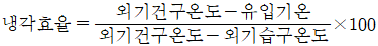
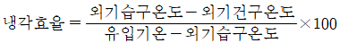
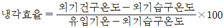
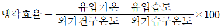

시설원예기사 (2003-03-16 기출문제)
1과목: 원예학개론
1. 봄에 온상육묘한 모종을 정식할 때 플라스틱 멀칭을 하는 가장 중요한 목적은?
- 지온을 높인다.
- 토양의 유실을 막는다.
- 풀이 나지 않게 한다.
- 병해충의 발생을 억제한다.
(정답률: 알수없음)

2. 과수의 적과 시기로 가장 적당한 것은?
- 개화직전
- 개화직후
- 생리적 낙과후
- 후기 낙과후
(정답률: 알수없음)
3. 화훼류 virus병과 별로 관계가 없는 것은 다음 중 어느 것인가?
- 진딧물
- 선충
- 기생식물
- 털벌레류
(정답률: 알수없음)
4. 카아네이션의 무균 배양 중 비루스의 검정 방법이 아닌 것은?
- 즙액접종
- 혈청반응
- 전자현미경
- 식물호르몬 처리
(정답률: 알수없음)
5. 과실의 추숙(성숙과 착색)에 가장 효과적인 물질은?
- 2.4 – D
- N6 - Benzyladenine
- Ethylene
- IBA
(정답률: 알수없음)
6. 토마토가 포장상태에서 최대의 수확을 나타낼수 있는 엽면적 지수는?
- 2 – 3
- 4 – 5
- 7 – 8
- 9 - 10
(정답률: 알수없음)
7. 녹지접(綠枝接)은 대개 어느 시기에 실시하는가?
- 3월 중순∼4월 상순
- 4월 하순∼5월 중순
- 6월 중순∼7월 상순
- 8월 상순∼9월 하순
(정답률: 알수없음)
8. 상추의 화아분화 및 추대를 일으키는데 영향이 가장 큰 환경 조건은?
- 장일
- 단일
- 고온
- 저온
(정답률: 알수없음)
9. 포도 잎자루의 기부에 산란하여 애벌레가 덩굴이나 줄기를 침해하는 것은?
- 포도 박쥐나방
- 포도 상점매미충
- 포도 필록세라
- 포도 유리나방
(정답률: 알수없음)
10. 미세종자 파종시의 복토방법으로 가장 좋은 것은?
- 종자크기의 약 1.5배 복토한다.
- 종자크기의 약 2 - 3배로 복토한다.
- 종자크기의 약 4 - 5배로 복토한다.
- 파종용토를 진동시킨후 가볍게 눌러준다.
(정답률: 알수없음)
11. 구근류 중 추식구근으로 짝지어진 것은?
- 아네모네, 구근아이리스
- 칸나, 프리이지어
- 다알리아, 수선
- 칼라듐, 아마릴리스
(정답률: 알수없음)
12. pH 4.8 - 5.4인 산성토양에서 잘 견디며 잘 생육하는 작물은?
- 당근, 시금치
- 양배추, 오이
- 양파, 꽃양배추
- 감자
(정답률: 알수없음)
13. 반입식물(斑入植物)의 해부학적인 특징을 기술한 것 중 틀린 것은?
- 반엽의 엽록소가 결핍되어 있는 경우
- 세포간극에 공기가 적어 광선이 반사되지 않기 때문에 은백색이 되는 경우
- 책상조직과 해면상조직이 불명확하게 분화된 경우
- 적색 부분에는 전분과 기타 물질을 함유하고 있지 않은 경우
(정답률: 알수없음)
14. 과실의 준드롭(June drop)의 원인과 가장 관계가 깊은 것은?
- 병해충의 침해를 받았을 때
- 수정 후 강우가 있을 때
- 배(胚)의 발육이 정지되었을 때
- 급속한 온도의 상승이 있을 때
(정답률: 알수없음)
15. 딸기를 8월 중에 고냉지에서 육묘하는 이유는?
- 내한성 강화
- 화아분화 촉진
- 런너 발생촉진
- 병해충 회피 및 방제
(정답률: 알수없음)
16. 여름철 노지에서 primula가 고온피해를 입은 후, 물러져 죽었다. 관계 없는 것은?
- Rhizoctoria 등의 곰팡이나 세균에 의해 곯아 죽은 것이다.
- 비기생 질병에서 유발된 현상이다.
- 여름에 시원하게 해주어야 피해를 줄일 수 있다.
- 질소시비가 중요하다.
(정답률: 알수없음)
17. 방임하여도 단위결과가 가장 잘 되는 채소는?
- 토마토
- 호박
- 수박
- 오이
(정답률: 알수없음)
18. 포도 각 품종에 대한 지베렐린 처리에 대한 기술 중 틀리는 것은?
- 켈벨어얼리에 지베렐린을 처리하면 무핵과 형성율도 좋고 수확기도 빨라진다.
- 델라웨어에 지베렐린을 처리하면 무핵의 과방을 얻을 수 있고 수확일도 앞당길 수 있다.
- 과립이 밀착되기 쉬운 블랙함브르크에 처리하면 열과를 예방할 수 있는 효과도 인정되었다.
- 근래에 거봉의 꽃떨이 현상을 방지해서 착립을 증진시키기 위하여 지베렐린을 처리한 결과 좋은 성과를 거두었다.
(정답률: 알수없음)
19. 화훼식물 형질 중에서 세포질유전을 하는 것은?
- 꽃색
- 반엽(얼룩)성
- 식물의 키
- 꽃의 모양
(정답률: 알수없음)
20. 과수재배시 내한성(耐寒性)이 가장 약한 시기는?
- 발육기
- 휴면초기
- 휴면중기
- 휴면말기
(정답률: 알수없음)
2과목: 시설원예학
21. 지면 피복용으로 사용되는 자재 중 산광 효과를 동시에 얻을 수 있는 것은?
- 부직포
- 연질필름
- 반사필름
- 기포메트
(정답률: 알수없음)
22. 온도를 이용한 공정묘의 초장조절에 대한 설명 중 맞는 것은?
- 많은 공정묘의 초장은 주야간의 온도차에 따라 조절될 수 있다.
- 일몰시의 저온처리가 절간신장 억제에 매우 효과적이다.
- 주간온도 보다 더 높은 야간온도를 처리해도 부작용은 나타나지 않는다.
- 고온기에도 주야간의 온도차를 이용하는데 어려움이 없다.
(정답률: 알수없음)
23. 기화냉방의 냉각효율을 산출하는 방식으로 알맞은 것은?




(정답률: 알수없음)
24. 다른 환경조건이 적당할 경우 광합성속도와 증산속도가 가장 높은 온실내 풍속은?
- 0.5 ∼ 1m/sec
- 1.5 ∼ 3.0m/sec
- 3 ∼ 5m/sec
- 5 ∼ 7m/sec
(정답률: 알수없음)
25. 지붕형 온실과 아취형 온실의 장단점을 비교한 내용 중 가장 옳게 설명된 항은?
- 광선의 유입은 지붕형이 고루 투사되어 많다.
- 적설시 아취형이 지붕형보다 유리하다.
- 천창의 환기능력은 지붕형이 아취형보다 유리하다.
- 재료비 부담 측면에 볼 때 지붕형이 아취형에 비하여 적게 소요된다.
(정답률: 알수없음)
26. 광합성 속도에 가장 큰 영향을 미치는 저항은?
- 기공저항과 표면경계층저항
- 엽육저항과 기공저항
- 엽육저항과 세포벽저항
- 세포벽저항과 표면경계층저항
(정답률: 알수없음)
27. 염류 농도를 낮추는 방법이 아닌 것은?
- 관수 또는 담수로 제염한다.
- 휴한기를 이용하여 단기간 내염성 작물을 재배한다.
- 마른 볏짚이나 마른 옥수수대 같은 미 분해성 유기물을 사용한다.
- 시설재배지에 연작을 한다.
(정답률: 알수없음)
28. 암면을 이용한 양액재배시 암면판 내의 적정 공극율은?
- 10%
- 15%
- 25%
- 30%
(정답률: 알수없음)
29. 40cm 깊이의 토층에 포장용수량(용적비)이 25%, 관수직전토양의 함수량(용적비)이 20%라 한다면 1회 관수량은? (단, 관수효율 90%)
- 12.2 L
- 22.2 L
- 25.2 L
- 32.2 L
(정답률: 알수없음)
30. 식물공장의 단점이 아닌 것은?
- 수경재배 방식에 의한 연작장해가 있다.
- 초기 투자비 및 유지비가 많이 든다.
- 수경재배 방식이므로 병 발생시 작물전체에 오염될 가능성이 있다.
- 양액의 완충능력이 적기 때문에 양액관리가 까다롭다.
(정답률: 알수없음)
31. 다음의 시설 과채류 작물 중 관수 소요량이 가장 적은 작물은?
- 멜론
- 토마토
- 오이
- 피망
(정답률: 알수없음)
32. 지표관수 방법 중 다공튜브 관수의 장점에 속하는 것은?
- 고압력에도 사용이 가능하다
- 지표, 지상, 지표의 멀칭아래 등 다양하게 설치 가능하다
- 고가식으로 설치하면 물방울이 굵어 토양 입자가 튀어 오른다
- 내구성이 강하며 수질에 관계 없이 어디서나 사용이 가능하다
(정답률: 알수없음)
33. KNO3 583mg 중에는 몇 mg의 K와 N이 들어있는가? (KNO3 의 분자량 = 101)
- K = 225mg, N = 81mg
- K = 125mg, N = 18mg
- K = 325mg, N = 181mg
- K = 23mg, N = 118mg
(정답률: 알수없음)
34. 시설재배작물인 토마토, 오이, 피망 등 과채류의 광합성 속도가 최고에 달하는 온도 범위 중 가장 적절한 것은?
- 15 – 20℃
- 20 - 25℃
- 25 – 30℃
- 30 - 35℃
(정답률: 알수없음)
35. 동화산물의 전류에 가장 큰 영향을 미치는 환경요인은?
- 광
- 온도
- 습도
- 탄산가스
(정답률: 알수없음)
36. 다음 중 생리장해에 의한 증상이 아닌 것은?
- 고추의 역병
- 고추 흑자색과, 토마토 공동과
- 토마토 배꼽썩음과
- 오이 등의 순멎이 현상
(정답률: 알수없음)
37. 수경재배를 하기 위해서 수질분석시 반드시 분석하도록 권장되는 것이 아닌 것은?
- pH와 EC
- 중탄산이온의 농도
- 염소와 나트륨의 농도
- 중금속 이온의 종류
(정답률: 알수없음)
38. EC meter는 무엇을 측정하는 기기인가?
- 토양의 산성도
- 토양의 전기전도도
- 토양의 염기치환용량
- 토양의 산화환원전위차
(정답률: 알수없음)
39. 자연환기를 위한 환기창의 면적은 전체 하우스 표면적의 어느 정도가 적당한가?
- 10%
- 15%
- 20%
- 25%
(정답률: 알수없음)
40. 육묘공장의 자동파종 시스템의 작업순서는?
- 상토혼합기→ 진압기→ 상토충전기→ 관수기→ 파종기→복토기
- 상토혼합기→ 진압기→ 관수기→ 상토충전기→ 파종기→복토기
- 상토혼합기→ 상토충전기→ 파종기→ 진압기→ 복토기→관수기
- 상토혼합기→ 상토충전기→ 진압기→ 파종기→ 복토기→관수기
(정답률: 알수없음)
3과목: 재배학원론
41. 농업생산에 있어서 환경조절을 행하기 위해서 취하는 과정이 아닌 것은?
- 환경조건과 작물의 반응에 대한 상호작용을 정량적으로 측정하여 환경제어 모델을 만든다.
- 생산현장에 대한 미세환경의 발현 및 성립 메카니즘을 해석한다.
- 환경제어 모델과 미세환경의 조절기술을 결합시켜 생산시스템을 확립한다.
- 환경조건에 적합한 작물을 선택하거나 품종을 개발한다.
(정답률: 알수없음)
42. 양액의 pH를 높이는데 사용되지 않는 염류는?
- H2SO4
- KNO3
- KOH
- H3PO4
(정답률: 알수없음)
43. 순환식 양액재배에서 배양액 살균방법 중 Fe과 같은 무기양분의 불용화를 초래하기 때문에 추가적으로 Fe 공급이 필요한 살균법은?
- 초음파
- 가열살균
- 자외선조사
- 모래여과기
(정답률: 알수없음)
44. 작물생육에 가장 중요한 인자로서 자동조절이 가장 용이한 환경은?
- 온도 환경
- 광 환경
- CO2 환경
- 수분 환경
(정답률: 알수없음)
45. 시설내 태양방사의 측정법으로 틀린 것은?
- 시설내의 입사광은 시설의 구석이나 연동시설의 연결부를 피해서 중앙에 설치하고 식물 피복면보다 30cm정도 위쪽에 설치하는 것이 좋다.
- 반사광은 일사계를 상향으로 수평되게 설치한다.
- 순방사는 일사의 측정과 동일하며 공기층의 방사수지의 영향을 적게 받도록 하기 위해 약간 낮게 설치한다.
- 군락내의 광환경은 1대의 일사계를 높이별로 여러곳에 이동시켜 수평을 유지하여 측정한다.
(정답률: 알수없음)
46. 시설내 환기의 효과로 볼 수 없는 것은?
- 온도조절
- 습도조절
- 산소조절
- 유해가스의 배출
(정답률: 알수없음)
47. 광합성작용과 일장효과를 촉진시키는 광 파장 범위는?
- 280 – 400㎚
- 500 - 610㎚
- 610 – 700㎚
- 800 - 3000㎚
(정답률: 알수없음)
48. 초본성 작물의 엽온을 낮추기 위한 방법 중 옳은 것은?
- 광합성 촉진을 위한 광도의 증가
- 환기로서 증산작용을 촉진
- 밀폐로 습도를 상승시킴
- 난방으로 호흡량 증가
(정답률: 알수없음)
49. 일반육묘에서 도장을 가장 조장할 수 있는 환경 요인은?
- 주간 고온, 건조
- 주간 저온, 다습
- 야간 고온, 다습
- 야간 저온, 건조
(정답률: 알수없음)
50. 온실이나 벤치에서 재배하는 작물에서 보편적으로 사용되는 관수방법으로서 포트 밑의 배수공을 통해 물이 스며 올라가도록 하는 관수방법은?
- 지중관수
- 미스트관수
- 점적관수
- 저면관수
(정답률: 알수없음)
51. 광이 작물생육에 미치는 영향 중 가장 거리가 먼 것은?
- 녹식물 춘화성
- 광합성
- 광주기성
- 기관형성
(정답률: 알수없음)
52. 전기저항식 습도 센서의 장점 중 틀린 것은?
- 측정범위가 넓다.
- 연속측정이 가능하다.
- 내부식성이 우수하다.
- 장기간 정확도가 높다.
(정답률: 알수없음)
53. 상온 범위에서 엽온의 분포를 측정하는데 주로 이용하는 방법은?
- 매우 가는 열전대 이용
- 적외선 복사온도계 이용
- 서모그래피 이용
- CCD카메라 이용
(정답률: 알수없음)
54. 다음의 온실지붕 피복방법 중 보온을 위한 피복이 아닌 것은?
- 복층판 지붕
- 열선흡수유리 지붕
- 공기막피복지붕(에어하우스)
- 이중고정피복 지붕
(정답률: 알수없음)
55. DIF와 작물의 초장과의 관계를 잘 설명한 것은?
- DIF가 증가할수록 초장이 증가한다.
- DIF가 증가할수록 초장이 감소한다.
- DIF가 증가할수록 초장이 증가하다가 다시 감소한다.
- DIF가 증가할수록 초장이 감소하다가 다시 증가한다.
(정답률: 알수없음)
56. 공정육묘생산 시스템 중 트레이를 이용한 육묘시 가장 관리가 어려운 것은?
- 수분과 영양
- 온도와 광선
- 온도와 산소
- 온도와 CO2
(정답률: 알수없음)
57. 작물재배 토양에서 토양 전 공극량의 몇 %가 기상공극 일 때 작물 생육에 가장 양호 한가?
- 0∼10%
- 10∼20%
- 20∼30%
- 30∼40%
(정답률: 알수없음)
58. 다음 중 강제환기방식의 설명으로 잘못된 것은?
- 환기량은 환풍기의 풍량 및 대수, 흡입구와 배출구의 면적이나 위치에 따라 변한다.
- 흡입구로부터 배출구까지의 온도구배가 생기지 않는다.
- 환풍기의 그림자로 인해 실내 광량의 감소가 있다.
- 환풍기에 의한 환기는 전기료 및 소음, 그리고 정전시 문제가 있다.
(정답률: 알수없음)
59. 마이크로 컴퓨터에 의한 온실 환경관리시스템의 기능에 속하지 않는 것은?
- 복합환경조절
- 긴급사태처리
- 테이터 수집, 해석
- 기상예보
(정답률: 알수없음)
60. 시설원예 작물의 생육에 관여하는 환경조절요인은?
- 각 환경이 독립적인 요인으로 개별적인 영향을 미친다.
- 각 환경이 독립적 영향뿐아니라 상호, 간섭적으로 영향을 미친다.
- 온 · 습도환경을 주축으로 모든 환경이 종속적 영향을 미친다.
- 광강도를 주축으로 모든 환경이 종속적 영향을 미친다.
(정답률: 알수없음)
4과목: 작물생리학
61. 식물의 호흡작용을 나타내는 반응식은?
- 6CO2 + 6H2O + 960kcal → C6H12O2 + 6O2
- C6H12O6 → 2C2H5OH + 2CO2
- C4H6O5 + 3O2 → 4CO2 + 3H2O
- C6H12O6 + 6O2 → 6CO2 + 6H2O + 에너지
(정답률: 알수없음)
62. 다음 작물 중에서 착과율이 가장 높은 작물은?
- 벼
- 콩
- 사과
- 감
(정답률: 알수없음)
63. 작물에서 광합성의 명반응(light reaction)이 일어나는 세포기관의 부위는?
- Mitochondria - grana
- Mitochondria - stroma
- Chloroplast - grana
- Chloroplast - stroma
(정답률: 알수없음)
64. 작물이 저장하는 탄수화물은 주로 어떤 형태로 저장하는가?
- maltose
- raffinose
- stachyose
- starch
(정답률: 알수없음)
65. 다음 중 춘화처리와 관련 없는 것은?
- 좌지 현상
- 발아 촉진
- 이춘화 현상
- 감온성(感溫性)
(정답률: 알수없음)
66. 벼의 수량구성요소(yield components)를 바르게 열거한 것은?
- 면적당 개체수, 종실수, 종실중
- 면적당 이삭수, 이삭당 영화수, 등숙율, 1립중
- 면적당 분얼수, 포기당 이삭수, 종실수, 1립중
- 면적당 이삭수, 종실수, 등숙율, 종실중
(정답률: 알수없음)
67. 잎에 있는 기공의 작용 등에 관하여 적절하게 표현한 것이 아닌 것은?
- 공변세포가 있어서 개폐에 영향을 미친다.
- 공변세포에는 엽록소가 있다.
- 광합성과는 관계가 있다.
- 보통 잎의 표면에 기공이 더 많다.
(정답률: 알수없음)
68. 무기 양분의 원형질막 투과는 용질의 성질에 따라 크게 차이가 있는데 그 원인은 원형질막의 투과성에 기인한다. 다음은 무기 양분의 원형질막 투과에 관한 설명인데 불합리한 것은?
- 전해질의 투과는 확산평형이 이루어질때까지 계속 한다.
- 그 속도는 지방용해성이 낮은 물질일수록 빠르다.
- 비전해질의 투과성은 용질입자의 크기에 따라 다르다.
- 지질에 대한 용해도가 동일하면 분자가 작을수록 빠르다.
(정답률: 알수없음)
69. 배(胚)의 휴면타파방법으로 흔히 사용하는 방법은?
- 종피파상법
- 층적법
- 종피제거법
- 진탕법
(정답률: 알수없음)
70. 다음 무기양분 중에서 필수원소의 미량원소로만 되어 있는 것은?
- 철(Fe), 붕소(B), 망간(Mn)
- 붕소(B), 아연(Zn), 황(S)
- 망간(Mn), 구리(Cu), 마그네슘(Mg)
- 염소(Cl), 철(Fe), 황(S)
(정답률: 알수없음)
71. 다음 중 광합성의 C3 과정에서 가장 먼저 만들어지는 성분은?
- PGA
- OAA
- Malate
- Acetyl Co A
(정답률: 알수없음)
72. pF = 4.2인 때의 수분 항수는?
- 수분당량
- 위조계수
- 포장용수량
- 최대용수량
(정답률: 알수없음)
73. 작물이 노쇠(老衰)하거나 생육이 지연 혹은 정지되는 과정에서 많이 생성되는 호르몬은?
- 옥신(auxin)
- 아브시스산(Abscissic acid)
- 지베렐린(Gibberellins)
- 카이닌(Kinins)
(정답률: 알수없음)
74. 세포분열을 촉진하고 노화억제효과가 있는 카이네틴(사이토카이닌)은 주로 어디에서 합성되는가?
- 생장점
- 잎
- 줄기
- 뿌리
(정답률: 알수없음)
75. 지방종자가 발아할 때 일어나는 지방분해와 관련된 대사경로는?
- 크렙스회로(TCA회로)
- 글리옥실산회로
- 5탄당인산회로
- 칼빈-벤슨회로
(정답률: 알수없음)
76. 기공의 개폐에 영향을 주지 않는 것은?
- 잎의 함수량
- 공기습도
- 공변세포의 팽압
- 잎의 형태
(정답률: 알수없음)
77. 작물의 뿌리가 생리적 저해를 받았을 때 흡수(吸收)가 가장 저해되는 양분 원소는?
- 질소
- 칼륨
- 칼슘
- 망간
(정답률: 알수없음)
78. 잎의 책상조직은 다음의 영구조직 중 어디에 해당하는가?
- 기계조직
- 통도조직
- 분비조직
- 유조직
(정답률: 알수없음)
79. CCC(2-chloroethyl)의 식물에 대한 생리작용은?
- 줄기를 도장시킨다.
- 낙화를 방지 한다.
- 개화를 촉진 한다.
- 줄기를 짧게 한다.
(정답률: 알수없음)
80. 식물체내에서 자연발생하는 식물호르몬 중 싸이토키닌(cytokinins)의 역할에 해당되지 않는 것은?
- 핵산 합성에 관여
- 노화방제 (조기낙엽방제)
- 종자발아 촉진
- 과실성숙 촉진
(정답률: 알수없음)
5과목: 수경재배학
81. 성숙된 산림토양에 주로 발달되는 층은?
- C1, C2 층
- B2, C1 층
- B1, B2 층
- Ao, A 층
(정답률: 알수없음)
82. 황산암모늄과 혼용해서 좋지 못한 것은?
- 중과석
- 탄산칼슘
- 황산칼륨
- 염화칼륨
(정답률: 알수없음)
83. 유효인산의 정량을 위한 분석방법(Lancaster법)시의 시약으로 옳지 않은 것은?
- 0.8M - H3BO3액
- NaHSO3 용액
- 몰리브텐산 암모늄 황산혼합액
- 브롬크레솔 그린
(정답률: 알수없음)
84. 작물 체내에서 이동이 잘 안되는 원소는?
- N
- K
- Ca
- Mg
(정답률: 알수없음)
85. 알칼리성 토양에서 결핍되기 쉬운 성분은?
- K
- Mo
- P
- Mn
(정답률: 알수없음)
86. 요소 비료의 제한 성분은?
- 설파민산
- 비소
- 유레아포름
- 뷰렛
(정답률: 알수없음)
87. 필수원소와 생리작용의 연결이 잘못된 것은?
- N → 엽록소구성성분
- P2O5 → 에너지대사
- K2O → 삼투압증가
- MgO → 수분조절작용
(정답률: 알수없음)
88. 관개수 중 약간 과량(過量)포함될 때 작물에 해를 끼치는 것은?
- 철
- 붕소
- 염소
- 나트륨
(정답률: 알수없음)
89. 어느 토양 100g 에 치환성 Ca: 40㎎, Mg: 24㎎, K: 39㎎, Na: 23㎎ 이 흡착되어 있다면 이 토양의 C. E. C.는? (단,분자량은 Ca = 40, Mg = 24, K = 39, Na = 23 이다.)
- 3me/100g
- 4me/100g
- 5me/100g
- 6me/100g
(정답률: 알수없음)
90. 토양의 색상표시법과 관계가 없는 것은?
- 색상
- 명도
- 채도
- 광도
(정답률: 알수없음)
91. 비료시험 시 주의할 사항이 아닌 것은?
- 표준구를 설치한다.
- 시험구의 반복구를 증가시킨다.
- 양질의 토양을 선정한다.
- 시비량을 적정하게 해야 한다.
(정답률: 알수없음)
92. 표준비료의 증수량을 100 으로 한 비교값을 비효가 라고 할 때 표준비료로 사용되지 않은 비료는?
- (NH4)2SO4
- CaH4(PO4)2
- K2SO4
- CaCN2
(정답률: 알수없음)
93. 식물체내 양분의 이동에 대한 설명으로 옳지 않은 것은?
- 동화산물 중 탄수화물은 자당의 형태로 이동한다.
- 동화산물이 필요 이상 있을 경우 일시적으로 잎과 줄기에 저장될 수 있다.
- 보통 호흡작용으로 탄수화물의 산화가 이루어진다.
- 종자발아 시는 전분, 지방, 단백질의 양이 증가한다.
(정답률: 알수없음)
94. 다음 작물 중 칼륨을 특히 필요로 하는 작물은?
- 곡류
- 목초
- 감자
- 옥수수
(정답률: 알수없음)
95. 염해지 토양의 특징은?
- 유기물 함량이 높다.
- 치환성 석회 함량이 높다.
- 활성철 함량이 높다.
- 마그네슘, 나트륨 함량이 높다.
(정답률: 알수없음)
96. 토양 완충능에 대한 설명으로 옳지 않은 것은?
- 점토함량이 많을수록 크다.
- 유기물함량이 많을수록 크다.
- 염기포화도가 클수록 크다.
- 염기치환용량이 클수록 크다.
(정답률: 알수없음)
97. 토양 pH가 증가할수록 식물 영양분의 유효도가 감소하지 않는 것은?
- 몰리브덴(Mo)
- 철(Fe)
- 망간(Mn)
- 아연(Zn)
(정답률: 알수없음)
98. 요소 25kg 와 황산암모늄 25kg 중에 들어있는 질소량을 비교할 때 그 차이(근사값)는?
- 약 3.00kg
- 약 4.00kg
- 약 6.00kg
- 약 10.00kg
(정답률: 알수없음)
99. 염류토양이 형성되는데 특히 크게 작용하는 요인은?
- 식생(植生)
- 기후
- 시간
- 모재료
(정답률: 알수없음)
100. 산소공급이 불충분한 논 토양에서 일어 날 수 있는 토양생성작용은?
- 라토졸화 작용
- 석회화 작용
- 글레이(glei)화 작용
- 염류화 작용
(정답률: 알수없음)